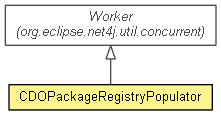

org.eclipse.emf.cdo.common.model
Class CDOPackageRegistryPopulator
java.lang.Object
 org.eclipse.net4j.util.event.Notifier
org.eclipse.net4j.util.lifecycle.Lifecycle
org.eclipse.net4j.util.concurrent.Worker
org.eclipse.emf.cdo.common.model.CDOPackageRegistryPopulator
org.eclipse.net4j.util.event.Notifier
org.eclipse.net4j.util.lifecycle.Lifecycle
org.eclipse.net4j.util.concurrent.Worker
org.eclipse.emf.cdo.common.model.CDOPackageRegistryPopulator
- All Implemented Interfaces:
- INotifier, ILifecycle, ILifecycle.DeferrableActivation
- public class CDOPackageRegistryPopulator
- extends Worker

Populates a target package registry by asynchronously polling a source
package registry for new EPackage registrations.
- Since:
- 2.0
| Methods inherited from class org.eclipse.net4j.util.lifecycle.Lifecycle |
activate, checkActive, checkArg, checkArg, checkInactive, checkNull, checkState, checkState, deactivate, deferredActivate, doAfterActivate, doBeforeActivate, doBeforeDeactivate, dump, getLifecycleState, isActive, isDeferredActivation, toString |
| Methods inherited from class org.eclipse.net4j.util.event.Notifier |
addListener, fireEvent, fireEvent, fireEvent, fireThrowable, firstListenerAdded, getListeners, getNotificationService, hasListeners, lastListenerRemoved, removeListener |
DEFAULT_SOURCE_POLL_INTERVAL
public static final int DEFAULT_SOURCE_POLL_INTERVAL
- See Also:
- Constant Field Values
CDOPackageRegistryPopulator
public CDOPackageRegistryPopulator(CDOPackageRegistry target)
CDOPackageRegistryPopulator
public CDOPackageRegistryPopulator(EPackage.Registry source,
CDOPackageRegistry target)
getSource
public EPackage.Registry getSource()
getTarget
public CDOPackageRegistry getTarget()
getSourcePollInterval
public long getSourcePollInterval()
setSourcePollInterval
public void setSourcePollInterval(long sourcePollInterval)
work
protected void work(Worker.WorkContext context)
throws Exception
- Specified by:
work in class Worker
- Throws:
Exception
doWork
protected void doWork()
doActivate
protected void doActivate()
throws Exception
- Overrides:
doActivate in class Worker
- Throws:
Exception
getThreadName
protected String getThreadName()
- Overrides:
getThreadName in class Worker
populate
public static boolean populate(CDOPackageRegistry target)
populate
public static boolean populate(EPackage.Registry source,
CDOPackageRegistry target)
Copyright (c) 2011, 2012 Eike Stepper (Berlin, Germany) and others.